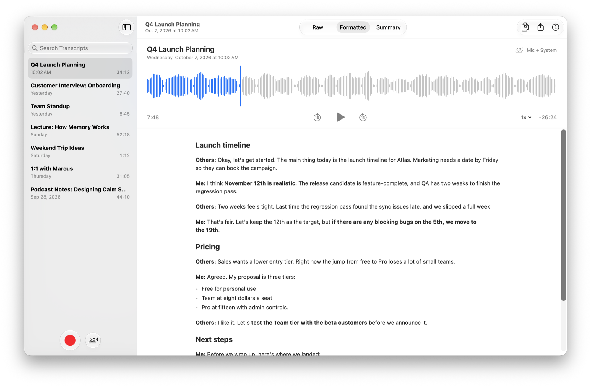
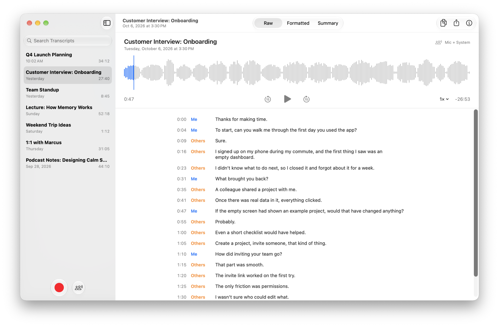
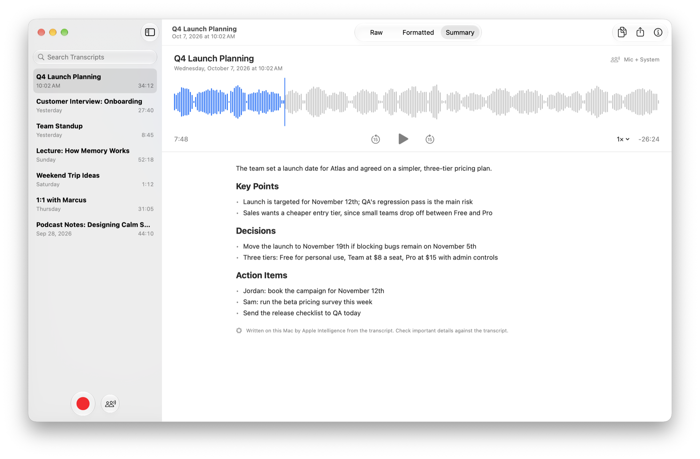
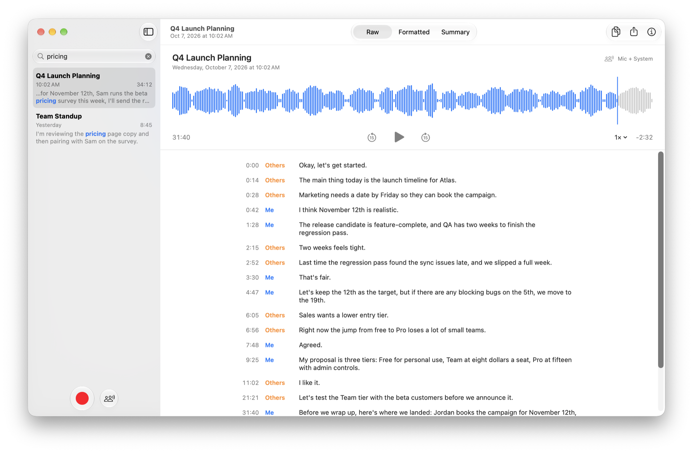

Records your Mac and your mic.
Capture calls, meetings, videos and lectures playing on your Mac, plus your own voice, as separate tracks.
Murmur
Murmur records your Mac’s audio and your voice, transcribes it entirely on your Mac, and turns it into notes you’ll actually want to read.
Free · Latest version · macOS 26 or later · Apple silicon

Switch between the word-for-word transcript, a cleanly formatted version, and a summary, all from the same recording.
Every word, timestamped, with who said it: Me for your microphone, Others for everyone on the call. Click any line to hear it.
Headings, highlights and lists, added by Apple Intelligence without rewriting a single word you said.
Key points, decisions and action items, ready to paste into an email or your notes.


Capture calls, meetings, videos and lectures playing on your Mac, plus your own voice, as separate tracks.
Your words and everyone else’s are labeled automatically, and echo from your speakers is removed.
Apple Intelligence adds structure and writes a summary, on your Mac, without changing your words.
Find any moment in any recording. Matches are highlighted, and the recording opens right where it was said.
Send a transcript to Mail, Notes or Messages, or export it as Markdown, plain text or subtitles.
Optional iCloud sync keeps your library on every Mac you use, with transcripts end-to-end encrypted.
Start and stop recording from any app with a global shortcut or from the menu bar, even with the window closed.
Import audio or video recordings and Murmur transcribes them just like its own.
New versions arrive automatically, signed and verified before they install.
Search across every transcript at once. Murmur shows each match in context and takes you straight to the moment it was said.

Your conversations are some of the most personal things you have. Murmur treats them that way.
Speech recognition, formatting and summaries all run on your Mac. Recordings are never uploaded for processing.
There’s nothing to sign up for, and Murmur collects no analytics. Its only connections are a one-time model download and update checks.
Sync is off unless you turn it on, and then it uses your own iCloud account, with transcripts end-to-end encrypted.
Free. Signed and notarized by Apple.
Open the downloaded file and drag Murmur to Applications.